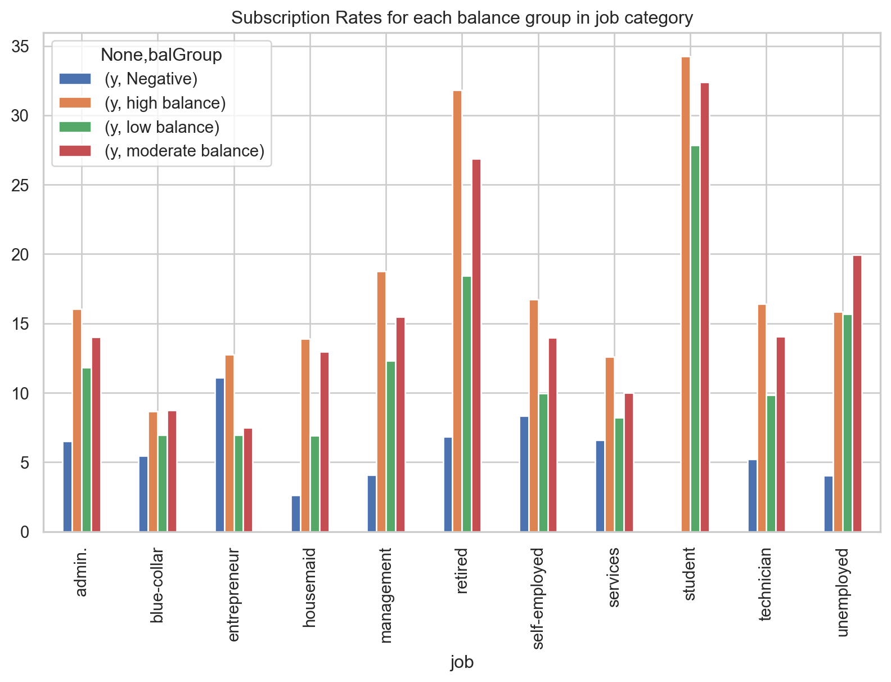

The George Washington University (DATS 6103: An Introduction to Data Mining)
Author
TEAM 11: Anjali Mudgal , Guoshan Yu and Medhasweta Sen
Published
November 21, 2022
1 INTRODUCTION:
Bank marketing is the practice of attracting and acquiring new customers through traditional media and digital media strategies. The use of these media strategies helps determine what kind of customer is attracted to a certain institutions. This also includes different banking institutions purposefully using different strategies to attract the type of customer they want to do business with.
As a discipline, marketing has evolved over the past few decades to become what it is today. Earlier, marketing strategies were primarily a means of spreading brand awareness. Today, marketing has been reinvented to fit a much bigger role. Creating both value and revenue to the institution. It is a big step up from its previous communication role, no doubt. One that was necessitated by the evolution of three factors: the consumer, the technology, and data analytics.
Marketing has evolved from a communication role to a revenue generating role. The consumer has evolved from being a passive recipient of marketing messages to an active participant in the marketing process. Technology has evolved from being a means of communication to a means of data collection and analysis. Data analytics has evolved from being a means of understanding the consumer to a means of understanding the consumer and the institution.
Bank marketing strategy is increasingly focused on digital channels, including social media, video, search and connected TV. As bank and credit union marketers strive to promote brand awareness, they need a new way to assess channel ROI and more accurate data to enable personalized offers. Add to that the growing importance of purpose-driven marketing.
The relentless pace of digitization is disrupting not only the established order in banking, but bank marketing strategies. Marketers at both traditional institutions and digital disruptors are feeling the pressure.
Just as bank marketers begin to master one channel, consumers move to another. Many now toggle between devices on a seemingly infinite number of platforms, making it harder than ever for marketers to pin down the right consumers at the right time in the right place.
1.1 THE DATA SET:
The data set used in this analysis is from a Portuguese bank. The data set contains 41,188 observations and 21 variables. The variables include the following:
age (numeric)
job : type of job (categorical: ‘admin.’,‘blue-collar’,‘entrepreneur’,‘housemaid’,‘management’,‘retired’,‘self-employed’,‘services’,‘student’,‘technician’,‘unemployed’,‘unknown’)
marital : marital status (categorical: ‘divorced’,‘married’,‘single’,‘unknown’; note: ‘divorced’ means divorced or widowed)
default: has credit in default? (categorical: ‘no’,‘yes’,‘unknown’)
housing: has housing loan? (categorical: ‘no’,‘yes’,‘unknown’)
loan: has personal loan? (categorical: ‘no’,‘yes’,‘unknown’)
contact: contact communication type (categorical: ‘cellular’,‘telephone’)
month: last contact month of year (categorical: ‘jan’, ‘feb’, ‘mar’, …, ‘nov’, ‘dec’)
day_of_week: last contact day of the week (categorical: ‘mon’,‘tue’,‘wed’,‘thu’,‘fri’)
duration: last contact duration, in seconds (numeric). Important note: this attribute highly affects the output target (e.g., if duration=0 then y=‘no’). Yet, the duration is not known before a call is performed. Also, after the end of the call y is obviously known. Thus, this input should only be included for benchmark purposes and should be discarded if the intention is to have a realistic predictive model.
campaign: number of contacts performed during this campaign and for this client (numeric, includes last contact)
pdays: number of days that passed by after the client was last contacted from a previous campaign (numeric; 999 means client was not previously contacted)
previous: number of contacts performed before this campaign and for this client (numeric)
poutcome: outcome of the previous marketing campaign (categorical: ‘failure’,‘nonexistent’,‘success’)
for i in clean_data.columns:if clean_data[i].dtype == np.int64:passelse:# printing names and count using loop.for idx, name inenumerate(clean_data[i].value_counts().index.tolist()):if name =='unknown'or name =='other':print(f"for {i}")print(f"{name} : {clean_data[i].value_counts()[idx]}")if clean_data[i].value_counts()[idx] <15000:print(f"dropping rows with value as {name} in {i}") clean_data = clean_data[clean_data[i] != name]
for job
unknown : 288
dropping rows with value as unknown in job
for education
unknown : 1730
dropping rows with value as unknown in education
5.0.2 Number of calls versus Duration and affect on subscription
Code
import seaborn as snsdur_cam = sns.lmplot(x='duration', y='campaign',data = clean_data, hue ='y', fit_reg =False, scatter_kws={'alpha':0.6}, height =7)plt.axis([0,65,0,65])plt.ylabel('Number of Calls')plt.xlabel('Duration of Calls (Minutes)')plt.title('The Relationship between the Number and Duration of Calls (with y)')# Annotationplt.axhline(y=5, linewidth=2, color="k", linestyle='--')plt.annotate('Higher subscription rate when number of calls <5 ',xytext = (35,13), arrowprops=dict(color ='k', width=1),xy=(30,6))plt.show()
Checking between pdays and previous as well
pdays: number of days that passed by after the client was last contacted from a previous campaign (numeric; 999 means client was not previously contacted)
previous: number of contacts performed before this campaign and for this client (numeric)
Code
import seaborn as snsdur_cam = sns.lmplot(x='pdays', y='previous',data = clean_data, hue ='y', fit_reg =False, scatter_kws={'alpha':0.6}, height =7)# plt.axis([0,65,0,65])plt.ylabel('pdays')plt.xlabel('previous')plt.title('The Relationship between number of contacts and last contactbefore this campaign (with y)')plt.show()
5.0.3 Smart Question
Based on last contact info only number of contacts performed during this campaign is contributing a lot towards subscription rates.
5.0.4 Month wise subscription
Code
#converting y values # bankdata['y'] = bankdata['y'].apply(lambda x: 'no' if x == 'yes' else 1)# bankdata['y'] = bankdata['y'].astype('category')#value count for each monthmonth = clean_data['month'].value_counts().rename_axis('month').reset_index(name='counts')#for sequencing the monthm1_list=['jan','feb','mar','apr','may','jun','jul','aug','sep','nov','dec']m1=pd.DataFrame(m1_list,columns=['month'])#now the dataset is sequecedmonth = m1.merge(month)#month - counts#% of people contacted in that month month['Contact Rate'] = month['counts']*100/month['counts'].sum()#percentage of people contacted in that month # y response month_y = pd.crosstab(clean_data['y'],clean_data['month']).apply(lambda x: x/x.sum() *100)#% of 0 and 1 for each month month_y = month_y.transpose()month_y.rename(columns = {'y':'month',0:'no', 1:'yes'}, inplace =True)# month_y# y | no% | yes%
Code
#month = month.merge(month_y)month['yes'] =" "month['no'] =" "#to make it in sequence def addingCrossTab(): for i, val inenumerate(m1_list):#print (i, ",",val) month['yes'].iloc[i]=month_y.loc[val].loc['yes']#print(month_y.loc[val].loc['yes']) month['no'].iloc[i]=month_y.loc[val].loc['no']addingCrossTab() #print(month) #print(month_y)# month['Subscription Rate'] = month_y['yes']# month['% NotSubscription'] = month_y['no']month.rename(columns = {'yes':'Subscription Rate','no':'NotSubscribed Rate'}, inplace =True)#month.drop('month_int',axis = 1,inplace = True)print(month)
month counts Contact Rate Subscription Rate NotSubscribed Rate
0 jan 1310 3.134046 10.0 90.0
1 feb 2492 5.961865 16.332263 83.667737
2 mar 439 1.050264 53.758542 46.241458
3 apr 2772 6.631738 19.083694 80.916306
4 may 13050 31.220843 6.697318 93.302682
5 jun 4874 11.660566 10.56627 89.43373
6 jul 6550 15.670231 8.793893 91.206107
7 aug 5924 14.172588 10.820392 89.179608
8 sep 514 1.229694 47.66537 52.33463
9 nov 3679 8.801646 10.192987 89.807013
10 dec 195 0.466518 45.641026 54.358974
Code
plot_month = month[['month','Subscription Rate','Contact Rate']].plot(x='month',kind ='line', figsize = (10,6), marker ='o')plt.title('Subscription vs. Contact Rate by Month')plt.ylabel('Subscription and Contact Rate')plt.xlabel('Month')
Text(0.5, 0, 'Month')
Maximum percentage of people have subscribed in the month of March but bank is contacting people more in the month of May. So it’s better to contact customer’s based on the subcription rate plot.
balanceGroupInfo.plot(x='balanceGroup', kind='bar', stacked=False, title='Balance Group Contact Rates and Subscription')plt.show()
People with moderate to high balance, are contacted less but they have high subscription rates so bank should target them more.
Balance Group versus Job
Code
# add the values for 1 job_balance = pd.DataFrame(data_vis.groupby(['job','balGroup'])['y'].sum())# total number of values job_balance_count = pd.DataFrame(data_vis.groupby(['job','balGroup'])['y'].count())job_balance['y'] = (job_balance['y']/job_balance_count['y'])*100job_balance = job_balance.unstack()job_balance = job_balance.plot(kind='bar',figsize = (10,6))plt.title('Subscription Rates for each balance group in job category')
Text(0.5, 1.0, 'Subscription Rates for each balance group in job category')

Student and Retired are more likely to subscribe and usually have moderate to high balance.
Code
job_balance_count1 = job_balance_count.unstack()job_balance_count1 = job_balance_count1.plot(kind='bar',figsize = (10,6))plt.title('Contact for each balance group in job category')
Text(0.5, 1.0, 'Contact for each balance group in job category')
#dropping y to extract x variables x = data_model.drop(['y'],axis=1)#y variablesy = data_model['y']#splitting the dataset x_train,x_test,y_train,y_test = train_test_split(x,y,test_size=0.2)
9 Balancing Our Dataset
Code
sm = SMOTE(random_state=42)train_sx, train_sy = sm.fit_resample(x_train, y_train)test_sx, test_sy = sm.fit_resample(x_test, y_test)#printing x and y values np.bincount(train_sy)